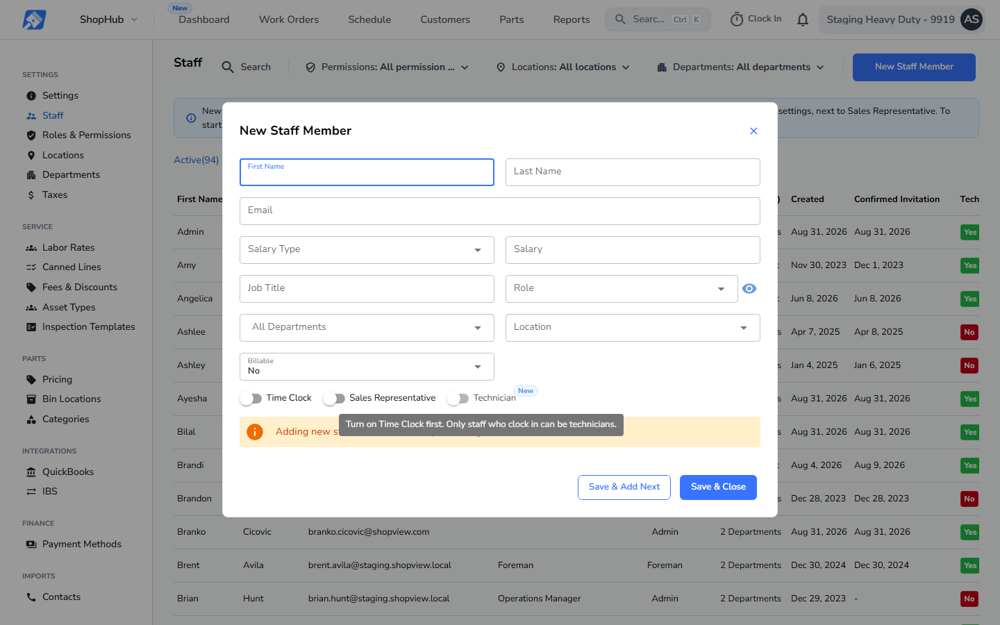
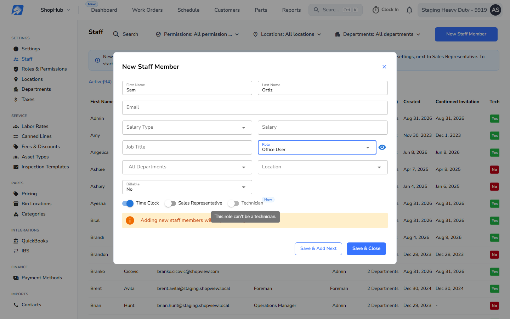

New, no before exists: production has no Technician toggle. Shown in the New Staff Member window; Edit behaves the same. The tooltip shows while hovering the grayed-out toggle.
This buildTime Clock off

Technician needs Time Clock. While Time Clock is off, Technician is off and grayed out. Tooltip, verbatim: "Turn on Time Clock first. Only staff who clock in can be technicians."
Turning Time Clock off turns Technician off. Turning Time Clock back on leaves Technician off; the user turns it on.
This buildBuilt-in Office User role

On the built-in Office User or Time Clock User role, Technician is off and grayed out. Tooltip, verbatim: "This role can't be a technician." Picking one of those roles turns Technician off.
Any other role, including a custom role copied from either one, never grays it out.